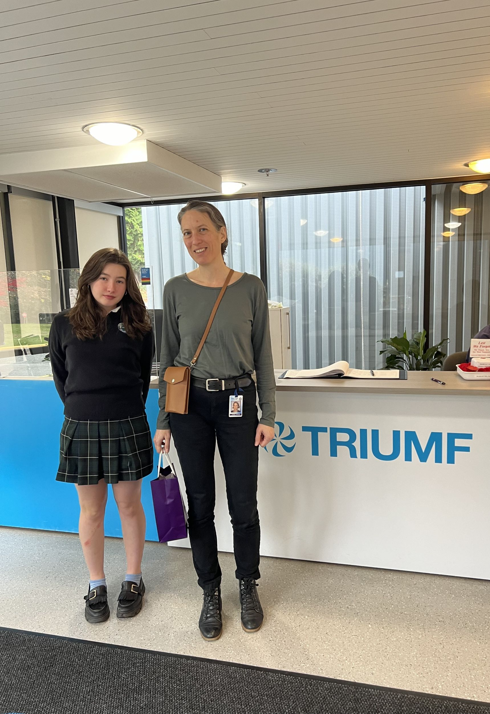
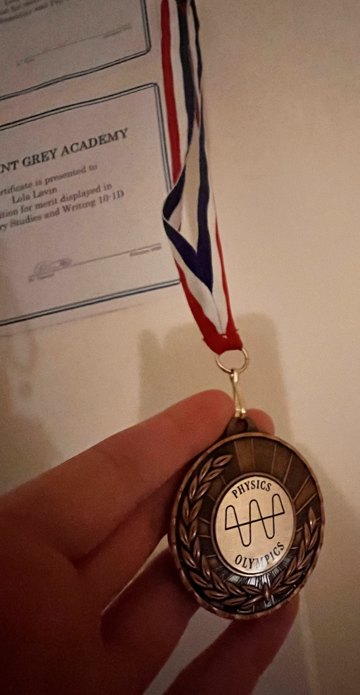
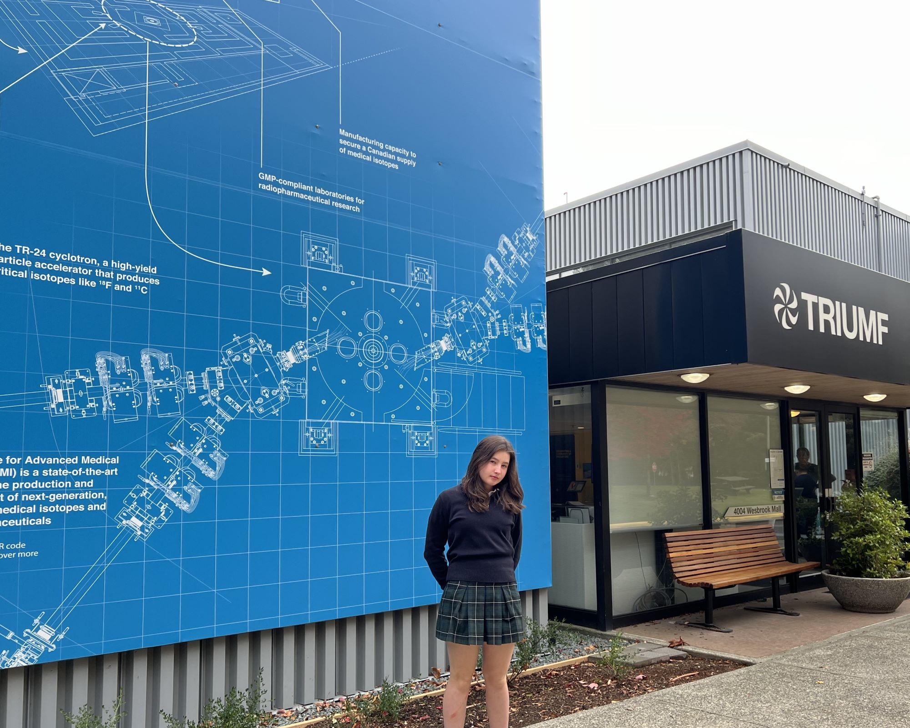
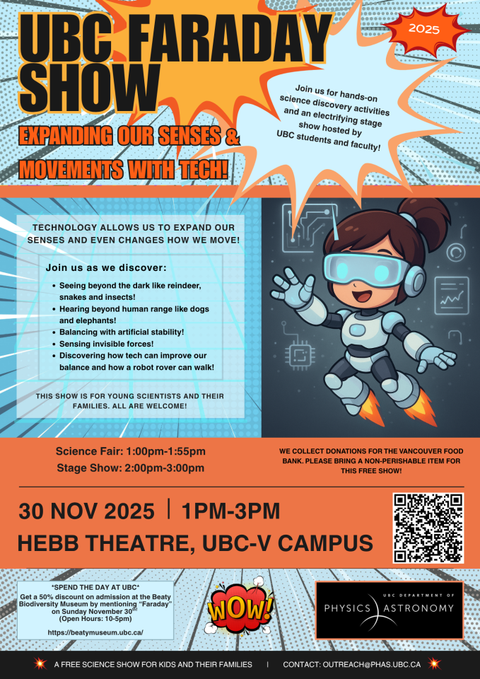

Lola Estelle Lavin
From particle physics at TRIUMF to biomedical engineering at UBC — Lola pursues science beyond the classroom with curiosity and ambition.

Participated in the TRIUMF ATLAS Physics Masterclass three consecutive years. In 2026, job-shadowed Senior Research Scientist Isabel Trigger, gaining hands-on experience with ATLAS particle physics data through the Hypatia software platform.

Competed in the UBC Physics Olympics in two events. Built a pole climber device with a Grade 12 partner, and achieved 3rd place in the Buoyancy Lab challenge with her group. A standout performance in a highly competitive field of students from across BC.

Used the Hypatia software platform to interact with real ATLAS detector data from CERN's Large Hadron Collider — analysing particle collision events and identifying signatures of fundamental particles.

Attended the UBC Faraday Show — Expanding Our Senses & Movements with Tech — a hands-on science discovery event exploring how technology extends human perception and movement, hosted at Hebb Theatre, UBC.
Attended UBC's Biomedical Engineering enrichment program in August 2024, exploring the intersection of medicine and engineering.
Completed the Math Potentials program at UBC in August 2024, strengthening advanced mathematical reasoning and problem-solving.
Completed the full Kumon Mathematics program from 2018–2023, building exceptional foundational and advanced math skills.